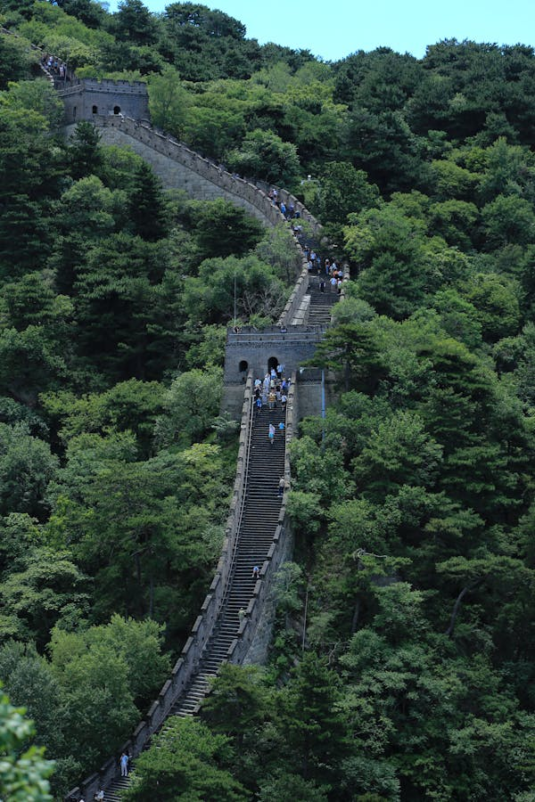
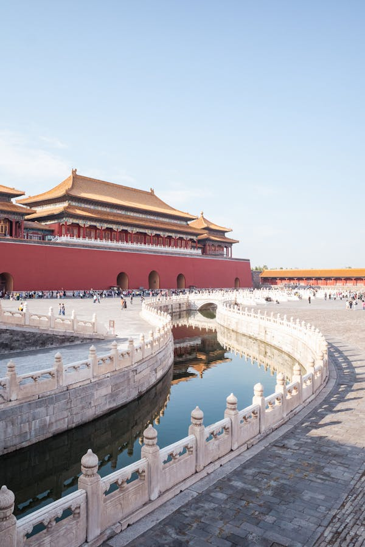
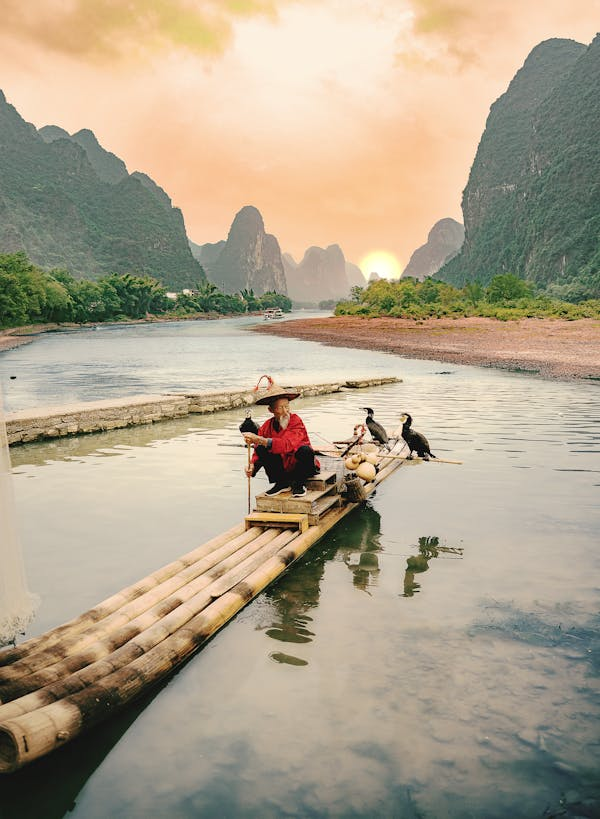

China boasts some of the most stunning and unique tourist destinations in the world.
The Great Wall of China

The Great Wall stretches across China for over 13,000 miles and offers one of the most iconic and picturesque sights in the world.
The Great Wall of China is considered one of the new Seven Wonders of the World.
Forbidden City

Located in Beijing, the Forbidden City is a symbol of China’s imperial history and is one of the most famous cultural sites.The Forbidden City, located in the heart of Beijing, is a massive imperial palace complex that served as the home of Chinese emperors for nearly 500 years. It's a UNESCO World Heritage Site known for its stunning architecture, intricate details, and rich history.
Li River

Known for its stunning karst mountain formations, the Li River is a popular destination for cruises and photography.
The Li River, located in the Guangxi province of China, is renowned for its picturesque scenery, characterized by karst mountains, lush greenery, and tranquil waters. It's a popular tourist destination, especially for river cruises.